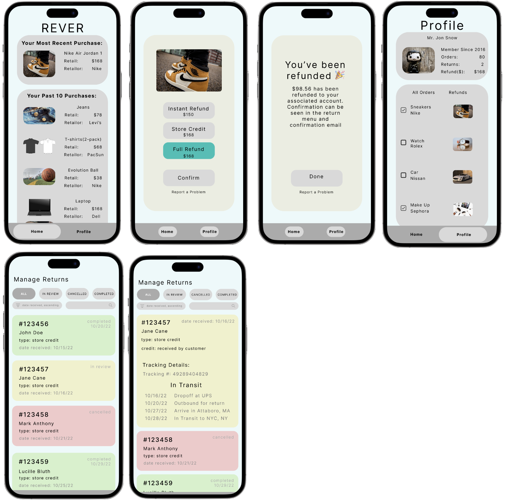
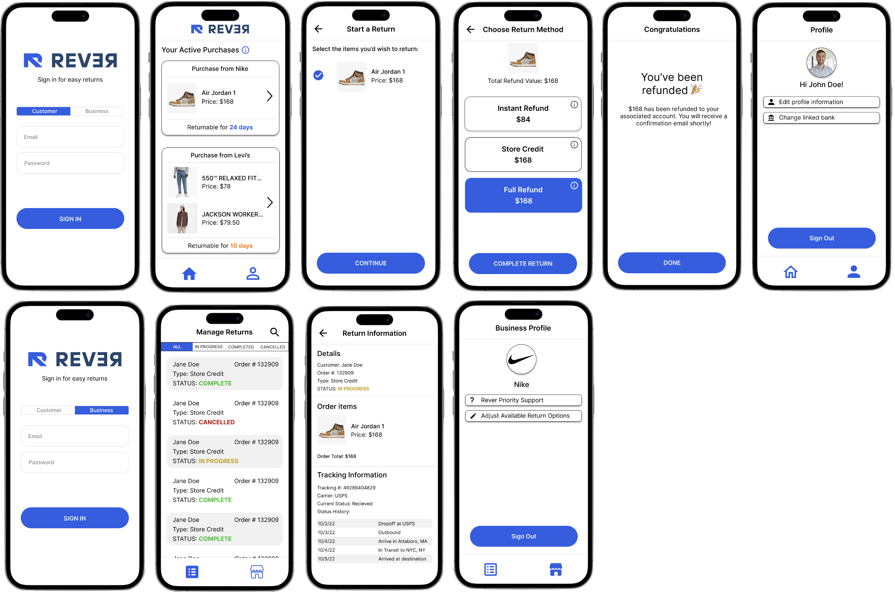

Iterative Redesign
Project Overview
Approximately 305 million start-ups are created annually. In this project we aim to mock up a solution to a start-ups concept. In hopes of achieving this goal, we have created a mobile interactive interface to solve the start-up’s of our choosing, Rever, concepts.
Pre-Design Thinking
This is a mobile application interface.
Rever is an up and coming startup with the goal of making returns easier. Rever makes returns easier by consolidating returns into one location and allowing consumers to return their products in 2 clicks. By offering different refund methods, you can get an instant refund if you need it rather than waiting for the long process of the return.
Our interface mainly impacts small to medium sized businesses that work in sales, as well as consumers of all ages and socioeconomic statuses, as this service provides an ease of life experience.
Users, both customers and businesses, can easily manage refunds with mobile phones. Users can sign in as a customer or business on the login page. Customers can select returnable items they would like to return in one click and have an option for instant refund, full refund, and refund through store credit. Businesses can manage all refunds from all customers in one page and can visualize refunds completed, in-progress, and canceled. The simple interface makes it more accessible, enhancing memorability.
Users, both customers and businesses, can easily manage refunds with mobile phones. Users can sign in as a customer or business on the login page. Customers can select returnable items they would like to return in one click and have an option for instant refund, full refund, and refund through store credit. Businesses can manage all refunds from all customers in one page and can visualize refunds completed, in-progress, and canceled. The simple interface makes it more accessible, enhancing memorability.
Sketches
LoFi Wireframe
HiFi Mockup Pre Critique

Click here to see our prototype before the critique
Critique Summary
| Flow 1 (Customer profile) | Flow 2 (Business profile) | Niko's critiques |
|---|---|---|
|
- Homepage has a lack of hierarchy. Confusion of functionality and where to look.
- Confusing Menu bar interface (many thought the home button was selected in the profile page and vice versa). - Not enough item information - Is it a group order? - How much time will it take for a full refund? |
- Color scheme was difficult to identify. Some text was not noticeable or left ambiguous with color selections.
- Many could not idenitfy that red order means cancelled, yellow means in review, and green means completed - Lack of logout button to switch between customer and business profiles. - Filtering of the order was not intuitive. - Seems more intuitive that most recent orders are at the top of the list |
- Unclear which button is selected (profile or home).
- Unclear what the refund page is (2nd screen of the HiFi mockup). - Lack of contrast in colors that can lead to accessibility issues. |
HiFi Mockup Post Critique

Click here to see our prototype after the critique
User Testing Task Instruction
Return the Air Jordan 1s from Nike. Choose any refund option that you'd like.
1. You are a busy and stressed customer with a shopping history and want to make quick returns. On the login screen, sign in as a customer. *in this mockup, you do not need to actually fill in the email and password input spaces.
2. You've recently initiated a refund on a MacBook and you want to check on how the refund is going. From the home page, find the purchase/refund information for the MacBook to see if it has been received by the business!
3. Return the pair of jeans for an Instant Refund, they don’t fit and you need a new pair ASAP.
4. It turns out you’re also a business owner who's hoping to easily keep track of refunds. Sign out of your customer profile and log in again, but this time from the Business option. *again, you do not need to actually fill in the email and password input spaces.
5. You want to review only the refunds in progress right now. Luckily, you notice that you can filter your options from the top menu bar. Filter the dashboard so that you only see the refunds that are IN PROGRESS, and click on one of them to see more information on how the refund is going.
2. You've recently initiated a refund on a MacBook and you want to check on how the refund is going. From the home page, find the purchase/refund information for the MacBook to see if it has been received by the business!
3. Return the pair of jeans for an Instant Refund, they don’t fit and you need a new pair ASAP.
4. It turns out you’re also a business owner who's hoping to easily keep track of refunds. Sign out of your customer profile and log in again, but this time from the Business option. *again, you do not need to actually fill in the email and password input spaces.
5. You want to review only the refunds in progress right now. Luckily, you notice that you can filter your options from the top menu bar. Filter the dashboard so that you only see the refunds that are IN PROGRESS, and click on one of them to see more information on how the refund is going.
User Testing Videos
Post-test Questions
1. As a customer, was returning the product with the different return options understandable?
2. As a customer, would you rather have speed in returning or more precision (such as extra confirmation screens)?
3. As a customer, did you locate your item easily? Would you like your items grouped in an order or individual items?
4. As a business owner, were all refunds easily manageable (easy to identify the status of the refund)?
2. As a customer, would you rather have speed in returning or more precision (such as extra confirmation screens)?
3. As a customer, did you locate your item easily? Would you like your items grouped in an order or individual items?
4. As a business owner, were all refunds easily manageable (easy to identify the status of the refund)?
Result Analysis
| User 1 | User 2 | User 3 |
|---|---|---|
|
- confused with sign in/sign out, but mainly due to figma navigational glitches
- was not familiar with the profile icon - thought a sign out button would be somewhere on the "home" page |
- initially tried the business profile
- did have a bit of confusion on the wording of the MacBook refunding processing |
- no issues, easily completed all tasks and understood the wording compared to the previous users |
All users were given the same task of returning the Air Jordan with some subtasks listed above. Users reported that refund options were
easily understandable and that locating items were easy too. All users agreed that grouping and sorting the items and orders made the
interface more usable and accessible. All users prioritized speed over precision, which is in line with the startup's mission and our
prototype's goal (to make refunds quicker and easier). Even the business profile seemed intuitive to the users, too, as they all completed
the subtasks successfully and stated that "the color coding for status and ability to filter made it easier." Although there seemed to
be soem confusion about the sign-in page and the meaning of icons, overall the UserTesting went as expected as all users completed the task
without much difficulty.
Potential interface changes based on these results/feedback
1. More clearly label what purchases have started the 'refund process' (from the MacBook refunding task)
2. Explain or emphasize the two different customer and business login options on sign-in page
2. Explain or emphasize the two different customer and business login options on sign-in page